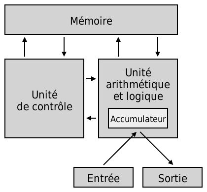

Modèle d'architecture de Von Neumann
L’architecture Von Neumann est une invention dans l’informatique créée en juin 1945 par un mathématicien John Von Neumann. Cette invention sert de modèle pour un ordinateur qui est organisée en trois parties : unité arithmétique, unité de commande et mémoire contenant programme et données. C’est une avancé dans l’informatique car elle montre une séparation entre le stockage et le processeur. L’architecture de von Neumann est aussi appelée ordinateur enregistré car les instructions sont enregistrées directement dans la mémoire avec un codage classique. Ce modèle est représenté par le schéma ci-dessous.
